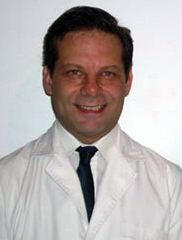

DATOS PERSONALES
- Médico – Facultad de Medicina – U.B.A. Expedido el 07/04/89
- M.N. Nº 78373
- M. P. Nº 37951
Antigüedad
Designación como Profesional de Guardia Médico suplente grupo Z categoría de
ingreso 25 Función 934 en el Hospital General de Agudos Dr.”José María Penna”,
Partida funcional 40-050 3WZ 25934. Desempeñando el cargo a partir del 24/12/90.
Cursos
- Curso de Actualización en Medicina Interna, Programa para Graduados de la U.B.A. Facultad de Medicina. Del 17 de Abril al 4 de Diciembre de 1990. Duración del Programa: 64 días. Total de horas: 128. Teórico Práctico con evaluación final.
- Curso de Actualización en Medicina Interna. Programa para Graduados de la U.B.A. Facultad de Medicina, 1993. Duración 250 horas con examen final teórico y práctico.
- Curso Anual de Diagnósticos diferenciales en Clínica Médica. Secretaría de Salud Pública de la Municipalidad de Bs.As. Comité de Docencia e Investigación, Htal. Penna. Duración del Programa: 250 horas docentes efectivas con evaluación final.1994.
- Curso de Atención Prehospitalaria en la Urgencia. Secretaría de Salud. Dirección General. S.A.M.E. Total de horas: 210. Octubre de 1994.
- Asistente al módulo de virología. Infecciones Intrahospitalarias, Infecciones bacterianas y Parasitología correspondiente al Curso Superior de Infectología, con una carga horaria de 52 horas. Colegio de Médicos Pcia. Bs. As. Distrito III. Con evaluación final. Morón, Diciembre 1995.
- Miembro Titular del Curso “Temas de Emergentología”. Hospital Municipal de Agudos “Parmenio Piñero”. Departamento de Urgencia. Comité de Docencia e Investigación. Realizado del 9 al 13 de Octubre de 1995.
- Miembro titular del curso Semiología para Médicos Clínicos. Hospital Municipal de Agudos “José María Penna”. Del 30 de Octubre al 3 de Noviembre de 1995.
- Miembro Titular de la Jornada de Accidente Cerebrovascular Isquémico. Tratamiento y Prevención. Organizada por la Academia Nacional de Medicina y el Consejo de Stroke (Sociedad Argentina de Cardiología). El 11 de Abril de 1996.
- “Seminario de Capacitación en Evacuación Aeromédica”. Certificado expedido por el Instituto Nacional de Medicina Aeronáutica y Espacial. Fuerza Aérea Argentina. Realizado del 5 de Abril de 1996 al 28 de Setiembre de 1996. Con evaluación final.
- Miembro Titular del Simposio sobre Stroke Cardioembólico, realizado el 17 de Mayo de 1996 en Hotel Conquistador. Bs.As. Argentina.
- Tercer Curso para Instructores en la Atención de Emergencia”. Gobierno de la Ciudad de Buenos Aires. Secretaría de Salud. Dirección General del S.A.M.E. de 25 horas de duración con evaluación final. Realizado en el mes de Marzo de 1997.
- Curso sobre Administración de Servicios de Salud, de 600 horas de duración, organizado por la Asociación de Médicos Municipales y oficialmente reconocido por la Secretaría de Salud del Gobierno de la Ciudad de Bs. As, desde el 24 de Marzo al 25/7 de 1997. Con eval. Final.
- Curso "Gestión de los recursos de salud en el primer nivel de atención". Programa de capacitación de médicos de cabecera. Gobierno de la ciudad de Buenos Aires. Secretaría de Salud. Dirección de Planeamiento y evaluación del Desempeño. Dirección de Capacitación. De mayo a octubre de 1998, con 60 Hs.
- Curso de Manejo Avanzado del Trauma (ATLS-Advanced Trauma Life Support) Nro. 15604-P efectuado en el Hospital Guemes, de Bs. As. Los días 22 y 23 de agosto de 1998, de 20 Hs. académicas. Con Aprobación de las actividades Teóricas,Prácticas y Evaluación final.
- Primer Curso Bianual de Formación de Médicos Emergentólogos. Asociación de Médicos Municipales. Instituto para el Desarrollo Humano y la Salud. Bs. As. Agosto 1997 a Agosto 1999.Carga Horaria 1500 horas. Evaluación final teórica y práctica.
- Curso Avanzado de Resucitación Cardiopulmonar (A.C.L.S.) según normas de la American Heart Association y de la Fundación Cardiológica Argentina. 30 de Junio y 1 de Julio de 2000.
- Participante del XXXV Taller de Entrenamiento Continuo del S.A.M.E. Bs.As. Julio de 2000.
- Curso de Capacitación para Médicos de Cabecera. Programa de capacitación para el Plan Médicos de Cabecera. Universidad de Buenos Aires. Maestría en Salud Pública. Carga Horaria 132 Hs. Con evaluación final, 2001.
- Curso Superior de Auditoría Médica realizado en la Asociación de Médicos Municipales de la Ciudad de Buenos Aires, de Agosto a Diciembre de 2001. Duración 100 Hs. Con evaluación final.
- Curso de Stroke 2006. Federación Argentina de Cardiología. Servicio deTerapia Intesiva Hospital Penna. 13 Nov. de 2006. Miembro titular de las XXIV Jornadas Médicas del Hospital General de Agudos “José María Penna”, efectuadas del 27 al 29 de Noviembre de 1990. Tema Central: Ictericia.
- Miembro titular de las XXV Jornadas Médicas del Hospital General de Agudos “José María Penna”, efectuadas del 27 al 30 de noviembre de 1991. Tema Central: “Medicina y MedioAmbiente”.
- Miembro titular de las XXII Jornadas Científicas Multidisciplinarias del Hospital General de Agudos “JoséMaría Penna”, realizadas del 22 al 26 de Noviembre de 1993.
- Miembro titular de las XXVIII Jornadas Médicas Científicas de Hospital General de Agudos “José María Penna”, realizadas de 22 al 25 de Noviembre de 1994.
- Miembro titular de las XXIX Jornadas Científicas Multidisciplinarias del Hospital general de Agudos “José María Penna”, realizadas del 21 al 24 de Noviembre de 1995.
- Miembro titular de las XXX Jornadas Científicas del Hospital General de Agudos “José María Penna”, realizadas del 26 al 29 de Noviembre de 1996. Tema central: Bioseguridad.
- Asistente de las Primeras Jornadas Multidisciplinarias de Atención Pre e Intrahospitalarias en la Catástrofe, Htal Tornú, 2, 3, y 4 Diciembre 1996.
- Miembro Titular de las Jornadas del Hospital General de Agudos "José María Penna" realizadas en Noviembre del año 1999.
- Miembro Titular de las Jornadas Multidisciplinarias del Hospital General de Agudos "José María Penna" Tema Central “Salud y Comunidad. Aciertos y Oportunidades perdidas”, realizadas en Noviembre de 2000.
- Miembro Titular de las XXXVI Jornadas Multidisciplinarias del Hospital General de Agudos José María Penna. Tema Central “Análisis Clínicos y Medicina: Actualidad y Proyección”. Realizadas del 26 al 29 de noviembre de 2002.
- Miembro Titular de las XXXVII Jornadas Científicas Multidisciplinarias del Hospital General de Agudos “ José María Penna” Tema cantral: Consultorios Externos de, para y po la comunidad , realizadas del 25 al 28 de noviembre de 2003.
- Miembro Titular de las XXXVIII Jornadas Científicas Multidisciplinarias del Hospital General de Agudos “José María Penna” Tema Central “El Departamento de Urgencia ante la Problemática Actual”. Realizadas del 23 al 26 de Noviembre de 2004.
- Asistente en el V Simposio Nacional de Medicina del Deporte realizado el día 12 de diciembre de 2005 en la ciudad de Villa Gesell.
- Miembro Titular de las XXXIX Jornadas Científicas Multidisciplinarias del Hospital General de Agudos "José María Penna” Tema Central La Salud de la Familia ante la crisis social”. Realizadas del 28 de Noviembre al 2 de Diciembre de 2005.
- Miembro Titular del XXXI Congreso Argentino de Cardiología. Buenos Aires del 8 al 11 de Octubre de 2004.
Trabajos Científicos
- Trabajo de investigaci ón Individual : "Organización del Hospital Penna en situaciones de desastre", presentado en las Jornadas del Hospital Penna en el mes de Noviembre de 1999.
- Trabajo de investigación individual: Incidencia de Hipertensión Arterial en el consultorio Externo de Clínica Médica del Hospital Penna, presentado en las XXVII Jornadas Científicas Multidisciplinarias del Hospital Penna en el mes de Diciembre de 1993.
- Trabajo de investigación individual: Accidentes de tránsito en la guardia día Domingo Htal. Penna. Presentado en las XXVIII Jornadas Científicas. Noviembre 1994.
- Trabajo de investigación individual: ''Tromboembolismo Pulmonar en la Emergencia". Presentada en las XXVIII Jornadas Científicas del Hospital Penna. Noviembre de 1994.
- Trabajo de investigación en colaboración: ¿Es utópico optimizar los recursos diagnósticos de Neumonías en nuestra sala de Clínica Médica. Presentado en las XXVIII Jornadas Científicas del Hospital Penna. 1994.
- Trabajo de investigación en colaboración: “Análisiscomparativo de la incidencia del virus de hepatitis C entre la población internada en un Hospital General de Agudos, pacientes con serología para retrovirus positiva yAlcohólicos''. 1996
- Trabajo de aporte individual: Desfibrilación en la Urgencia. Presentado en las XXVIII Jornadas Científicas del Hospital Penna. Noviembre de 1994.
- Trabajo de aporte individual: ¿Neurosífilis una patología del Pasado?. Presentado en el Tercer Congreso Municipal de Medicina Interna, 1995.
- Trabajo de aporte individual: Enfermedad de Behcet, Presentación de un caso. Presentado en las XXVII Jornadas Científicas Multidisciplinarias de Hospital Penna. Diciembre de 1993.
- Trabajo de aporte en colaboración: Enfermedad de Gaucher. Presentación de un caso. Presentado en las XXV Jornadas Médicas de Hospital Penna. 1991
Concurrencias y residencias
Médico concurrente del Servicio de Clínica Médica del Hospital General de Agudos “José María Penna”, desde Marzo de 1990 al mes de Marzo de1995. Concurrencia completa según disposición 262-hgajmp-90. Se presenta certificado de acuerdo a lo dispuesto en el Art. 14 de la resolución Nro. 45/86.
Cargos
- Designación como Profesional de Guardia Médico suplente grupo Z Categoría de ingreso 25 Función 934 en el Hospital General de AgudosDr.”José María Penna”, Partida funcional 40-050 3WZ 25934. Desempeñando el cargo a partir del 24/12/90.
- Designación como Profesional de Guardia Médico Asistente Interino, 24 horas semanales día Domingo para desempeñarse 12 horas en planta “Grupo” A Categoría de Ingreso 03 función 924 en el Hospital General de Agudos “José María Penna”, partida funcional Nro.4005-2000-D/03.924. Desempeñándose en el cargo a partir del día 26/7/92.
- Ratificación con fecha 26/7/93 según resolución Nro. 53/93 del 1/7/93 de la designación hasta la provisión definitiva de titular por concurso como Profesional de Guardia Médico día Domingo con 24 horas semanales en el Hospital general de Agudos “José María Penna”, por disposición Nro. 113/92 a partir del 26/7/92.
- Designación como Médico de Cabecera en el Area Programática del H.G.A.”J.M.Penna”, desde el 1/1/97 hasta la actualidad, según decreto Nro. 496/96.
- Designación en carácter de Interino como Médico Especialista en Clínica Médica con 24 Hs. Semanales Día Domingo, partida 4005.2000.D.03.954, del H.G.A.Dr. “José María Penna”, cesa como Profesional de Guardia Médico Interino, con 24 Hs. Día domingo, partida 4005.2000.C.02.924, del citado Hospital. Según decreto Nro.1202/97.
Títulos
- Título de Especialista en Clínica Médica. Certificado el 10 de Julio de 1997. Ministerio de Salud y Acción Social. Secretaría de Salud. Expediente Nro. 1-2002-11.539-96-5. - Con evaluación.Título de Médico Especialista en Medicina Legal. Diciembre 14 de 2000.
- Médico Especialista en Medicina Laboral. Noviembre de 2007.
Actividad Técnico Profesional
Cargos Nacionales, Provinciales, Municipales.
- Subinterventor del Departamento de Prestaciones Médicas de la Sucursal VIII San Martín del Instituto Nacional de Servicios Sociales para jubilados y Pensionados (INSSJP) a partir del 01 de Noviembre de 2000 hasta Marzo de 2002.
- Medico Suplente de guardia de la Municipalidad de Morón. Desempeñando tareas en la Dirección SAME MORON desde julio de 2005 con legajo 201.690. Medico de cabecera del Instituto Nacional de Servicios Sociales para Jubilados y Pensionados en la U.G.L. Nº XXIX Morón desde el 1 de Octubre de 2005 hasta la actualidad.
Tareas encomendadas
- Desempeño de la función de Jefe de Unidad de guardia ante la ausencia del jefe Titular.
- Realización del Plan de Emergencias para situaciones de Desastre interno y externo del Hospital Penna solicitado por la Secretaría de Salud del Gobierno de la Ciudad de Buenos Aires. 2006.
- Secretario del Comité de Emergencias del Hospital General de "Agudos José María Penna", designado en reunión del mismo el día 28 de marzo de 1998 hasta la actualidad.
- Secretario General de las XXXVIII Jornadas Interdisciplinarias del Hospital Penna. Del 23 al 26 de Noviembre de 2004.
- Secretario de las “I Jornadas Interhospitalarias de Emergentología y Catástrofe” y “II Jornadas Multidisciplinarias de atención pre e intrahospitalarias en la Catástrofe del H.G.A.E.Tornú”, 1, 2 y 3 de Diciembre de 1997.
- Miembro Titular del III Congreso Municipal de Medicina Interna. Realizado del 13 al 16 de Agosto de 1995. Centro Cultural San Martín.
- Miembro Titular del IV Congreso Municipal de Medicina Interna.Realizado del 21 al 24 de Setiembre de 1997. Centro Cultural San Martín.
- Miembro Titular del VIII Congreso Argentino de Medicina del Trabajo.Sociedad de Medicina del Trabajo de Tucumán. Federación de Medicina del Trabajo Argentina. Realizado en Tucumán, Argentina del 23 al 27 de Mayo de 1994.
- Miembro Titular de las III Jornadas Interprovinciales e Interdisciplinarias de Medicina del Trabajo de Mendoza. Federación de Medicina del Trabajo. Realizado en Mendoza Argentina del 13 al 16 de Agosto de 1994.
- Comentador de Mesa de Trabajos Libres en las XXVIII JornadasCientíficas del Hospital General de Agudos “José María Penna” del 22 al 25 de Noviembre de 1994.
- Integrante de Mesa redonda en las XXVIII Jornadas Científicas del Hospital General de Agudos José M. Penna del 22 al 25 de Noviembre de 1994.
- Secretario de Mesa de Lectura en las XXXII Jornadas Científicas Multidisciplinarias del Hospital General de Agudos "Dr. José María Penna''. Tema central: Grandes Temas Ginecológicos. Del 24 al 27 de Noviembre de 1998.
- Comentador de Mesa de Trabajos Libres en las XXIX Jornadas científicasMultidisciplinarias del Hospital General de Agudos “Jose María Penna” del 21 al 24 de Noviembre de 1995.
- Integrante de la Mesa de Trabajo Interdisciplinario: Actuación del Servicio Social en la Guardia . XXXVIII Jornadas Hospital Penna. 23 al 26 de Noviembre de 2004 coordinador de Posters en las XXXVIII Jornadas Científicas Multidisciplinarias del Hospital Penna. Del 23 al 26 de Noviembre de 2004.
- Participante de las Segundas Jornadas de Medicina de Desastre. Tercer encuentro de Trauma del Mercosur. Simulacro en la atención de víctimas de un desastre. 8 y 9 de mayo de 1998. Htal de Clínicas José de San Martín, Facultad de Medicina.
- Integrante del Taller de Derrumbes en las XXVI Jornadas Médicas del Hospital General de Agudos “José María Penna”, 2,3 y 4 de Diciembre de 1992.
- Miembro Honorario del Centro de Referencia Universitario para la atención del niño VIH positivo y su familia. Resolución 848 del 6 de Julio de 2004.
Actividad Docente y Universitaria
Docencia Universitaria
- Designación como Docente Libre de la Universidad de Buenos Aires para dictar el Tercer Curso Anual de Patología de Urgencia y Manejo de la Aparatología de Guardia y Ambulancia por resolución del Consejo Directivo de la Facultad de Medicina, según resolución Nro. 1148 del 15 de Octubre de 1998. Expediente Nro. 510.239/97.
- Designación como Docente Libre para el dictado del Programa deActualización para Graduados titulado "Curso de Patología de Urgencia del Hospital Penna" por resolución Nro. 921 del Consejo directivo de la Facultad de Medicina del día 8/6/00. Expediente Nro. 511.132/99.
- Designación como Docente Libre para el dictado del Programa de Actualización para Graduados titulado "Curso de Patología de Urgencia del Hospital Penna" por resolución Nro 2330 del Consejo Directivo de la Facultad de Medicina del día 21 de Diciembre de 2000. Expediente Nro. 510.566/00.
- Director del Primer Curso Anual de Pre-Grado OPTATIVO de Patología de Urgencia, realizado en el Htal J.M.Penna durante el año 1998. Aprobado en sesión del consejo directivo de la Facultad de Medicina de la U.B.A. porResolución Nro. 921.
- Designación en el cargo de Ayudante de Primera (H) en carácter de Interino, con lugar de trabajo en U.D.H. Penna Depto. de Medicina-O.R. Medicina Interna según el Artículo Primero del expediente Nro. 503.564/94.
- Designación en el cargo de Ayudante de Primera Honorario en carácter de Interino, con lugar de trabajo en U.D.H. Penna 321.DPTO. de Medicina-OR. Medicina Interna. Según Articulo 1ro. Expediente Nro. 509.889/97.- Resolución Nro.2267. 16 de Octubre de 1997.
- Colaborador en el dictado de clases de Medicina Interna en la U.D.H. del Hospital General de Agudos “José María Penna”, durante el período lectivo 1992.
- Colaborador en el dictado de clases de Medicina Interna en la U.D.H. del Hospital General de Agudos “José María Penna”, durante el período lectivo 1993.
- Carrera Universitaria Docente Aprobada 1997. Departamento de Medicina Orientación Medicina Interna aprobando exámenes de: Idoneidad-escrito 21/10/96, Idoneidad-oral 11/11/96 e Idioma 25/11/96.
- Ayudante de 1º de la asignatura Medicina Familiar en la sede Suizo- Argentina dependiente de la Universidad de Buenos Aires durante el año 2001 Y 2002.
- Participante del ATENEO SOBRE INVESTIGACIÓN, EXHUMACIÓN Y RECONOCIMIENTO DE LOS RESTOS DE ERNESTO “CHE” GUEVARA, Cátedra de Medicina Legal, Universidad de Buenos Aires, 25 de Abril de 2001.
- Participante del ATENEO SOBRE INFORMATIZACIÖN DE LA HISTORIA CLÏNICA, SEGURIDAD INFORMÁTICA, Cátedra de Medicina Legal, Universidad de Buenos Aires, 26 de Octubre de 2001.
Docencia no Universitaria
- Coordinador del I Curso Anual de Patología de Urgencia, Manejo de la Aparatología de urgencia y Normas de procedimiento en Guardia y Ambulancia. Realizado en el Hospital General de Agudos “José María Penna”.Departamento de Urgencias. Comité de Docencia e Investigación. S.A.M.E. Dirección de Emergencia. Del 28/5/96 al 29/10/96. Total 560 Hs.
- Director del II Curso Anual de Patología de Urgencia, Manejo de la Aparatología de urgencia y Normas de procedimiento en Guardia y Ambulancia. Realizado en el Auditorio de BIOSIDUS. Departamento de Urgencia. Comité de Docencia e Investigación. S.A.M.E. Dirección de Emergencia. 1997. Carga Horaria 560 Hs. Con evaluación final.
- Director del III Curso de Patología de Urgencia del Hospital Penna. Departamento de Urgencia. Comité de Docencia e Investigación. S.A.M.E. Dirección de Emergencia. Universidad de Buenos Aires. Carga horaria 405 Hs, con evaluación final. De Agosto a Noviembre de 1998.
- Director del IV Curso de Patología de Urgencia del Hospital Penna. Con una carga horaria de 540 Hs. y evaluación final, de Abril a Octubre de1999.
- Secretario del Curso de Actualización de Medicina Interna, “El Diagnóstico Diferencial a través de los exámenes complementarios. 1996. Carga horaria 250 Hs.
- Director del "V Curso de Patología de Urgencia de Hospital Penna", con una carga horaria de 540 Hs. Departamento de Urgencias. Comité de Docencia e Investigación. Universidad de Buenos Aires. 2000.
- Director del primer Curso de Emergencias Médicas, llevado a cabo los días 10, 11 y 12 de diciembre de 1997 para alumnos de la U.D.H. del Hospital General de Agudos José María Penna, con una carga horaria de 25 hs. con evaluación final.
- Director de Primer Curso de Normas y procedimientos Administrativos en el Departamento de Urgencias", realizado durante los meses de Mayo y Junio de 2000.
- Departamento de Urgencias Htal J.M. Penna. Comité de Docencia e Investigación. Carga horaria 21 horas.
- Disertante en los temas: “Atención Prehospitalaria” y “Ejercicio de Triage” en el Quinto Curso de Emergencia Prehospitalaria del S.A.M.E. Junio 20 de 1997.
- Disertante en el tercer Curso de Patología de Urgencia de Hospital Penna. Llevado a cabo de agosto a noviembre de 1998.
- Disertante del primer Curso de Emergencias Médicas, llevado a cabo los días 10, 11, y 12 de diciembre de 1997 para alumnos de la U.D.H. del Hospital General de Agudos José María Penna, con una carga horaria de 25 hs. con evaluación final.
- Disertante del Cuarto Curso de Patología de Urgencia del Hospital Penna en los temas Atención inicial del Politraumatizado, 1999.
- Disertante del Quinto Curso de Patología de Urgencia del Hospital Penna en el tema "Registros e Historia Clínica", 2000.
- Disertante en el Quinto Curso de Patología de Urgencia del Hospital Penna en el tema “Medicina Legal en la Urgencia”, 2000.
- Disertante en las XXXVIII Jornadas Científicas Multidisciplinarias del Hospital Penna sobre el tema Primeros Auxilios. Noviembre 2004.
- Director del VI Curso de patología de Urgencia del Htal. J.M. Penna, 240 hs. Docentes con evaluación final.
- Docente del VI Curso de Patología de Urgencia. Atención inicial del politraumatizado.
Otros aportes
- Secretario del Comité de Emergencias del Hospital General de "Agudos José María Penna", designado en reunión del mismo el día 28 de marzo de1998 hasta la actualidad.
- Certificado Elemental de Aptitud correspondiente al 4to. Año de la Asociación Argentina de Cultura Inglesa. Buenos Aires 20 de Diciembre de1977.
- Diploma Superior de Capacidad, correspondiente al 6to. Año Superior de la Asociación Argentina de Cultura Inglesa. Buenos Aires, 20 de Diciembre de 1979.
- Curso Anual de Computación sobre Informática Aplicada a la Medicina. Dictado en el Hospital Penna comprendiendo los siguientes módulos: MS DOS. , MS Windows 3.1, MS Word for Windows 2.0, Dbase III plus.
- Profesor de la materia Biology para el International General Certificate of Secondary School en el colegio bilingüe Sarmiento School de San Antonio de Padua desde Marzo de 1998 hasta la actualidad.